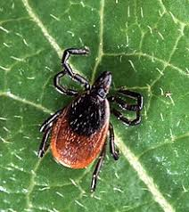
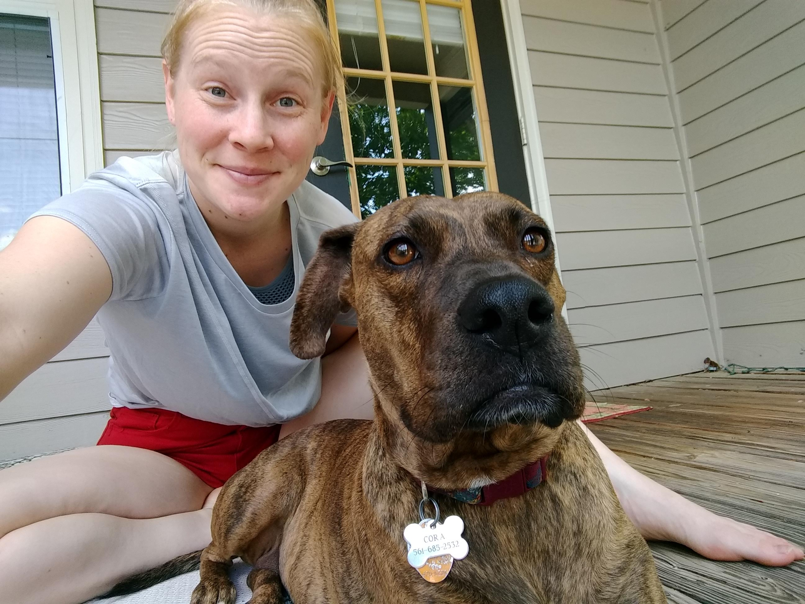

My name is Julia Frederick. I was born in Coral Springs, Florida and resided there until I began my BS in Biology at Georgia Tech in the Fall of 2012. During my time at Georgia Tech I was member of the Women’s Track and Field team where I competed in high jump and javelin. After graduation I moved to Gaithersburg, Maryland to start work at the Vaccine Production Program Lab for the NIH, where I worked in Cell Culture. After 2 years of work, I decided to pursue graduate school and I am now working towards my PhD in Environmental Health Science at the University of Georgia
My research focused on the behavior of Hesperodiaptomus shoshone when exposed to hydrodynamic cues. This lab is considered a bio-inspired design lab, where our research is being applied to autonomous underwater vehicles.
During my time here I worked on two projects with the goal of developing a vaccine to combat HIV. One was an antibody vaccine while the other was a recombinant protein. We created protocols to get the best yield from each bioreactor run and would transfer these protocol from our 3-50L scale to the production facility that operated at a scale of 1000-2000L.
My current research focuses on understanding the driving factors of the Lyme Disease Gradient. In this research I am doing a combination of behavior biology, population genetics, and Mendelian genetics. We are currently figuring out our future plan to cross breed ticks from different locations to study their genetics! My species of interest is Ixodes scapularis.

To receive an undergraduate degree from Georgia Tech you must complete a computer coding course which was mainly taught in Python but exposed us to java, SCAD, and HTML. Through the trainings I have been a part of I have had exposure to JMP, and R. My JMP training focused on ANOVA, regression, and custom design of experiments. We then applied the training to my work at the NIH for experimental design and some data analysis when complete. The R trainings have covered a variety of topics but in general have given me a decent overview of all things R. I have been using R in my research for data visualization of my population genetics, and laying out the schematic for crossbreeding experiments.
I this course I would like to leave with an understanding of the different data analyses that can be run through R. I would also like to have some example code I will be able to reference in the future when I begin data analysis of my own research.
Last October I adopted a dog through UGA’s vet school from when the 3rd years are doing a spay and neuter lab. Her name is Cora, based off of the mother charater in Downton Abbey. She had Georgia’s first confirmed case of Heartgard resistant Heartworm, and will be done with her treatment the week after Labor Day! 
The website FiveThirtyEight uses statistics and data visualization to cover a wide range of news topics. At the end of last year they made a post to “The 45 Best - Weirdest - Charts We Made In 2018”. This post includes highlights from sports, culture, science, and politics over the course of 2018 featuring a wide range of topics from “America Loves Curling - Until It Forgets About It For Four Years” to “Why California’s Wildfires Are So Destructive, In 5 Charts”.